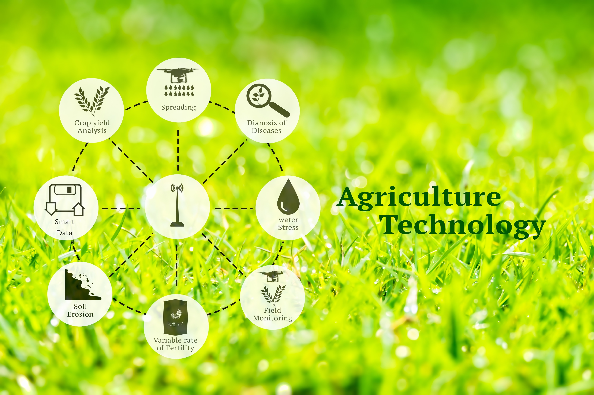

Nano Fertilizers
Nano fertilizers act as eco-friendly “magic bullets” delivering nutrients efficiently with reduced losses and higher crop response.
Definition
What are Nano Fertilizers?
Nano fertilizers are nutrient formulations in nano-scale (1–100 nm), engineered for controlled release, higher nutrient-use efficiency, and minimal environmental pollution.

Insert a schematic diagram, field photo, or structure of nano fertilizers here.
Interactive
Types, Mechanism & Impact
- Nano-encapsulated fertilizers
- Nano-coated fertilizers
- Nano-chelated micronutrients
- Nanocomposite fertilizers
- High surface area → better root contact
- Slow & controlled nutrient release
- Stimuli-responsive nutrient delivery
- Reduced fixation and leaching losses
- Higher nutrient-use efficiency (NUE)
- Reduced fertilizer requirement
- Lower environmental pollution
- Improved crop yield & quality
- Lower subsidy burden
- Better soil health
- Higher cost
- Limited long-term data
- Need strict regulation
- Risk of misuse